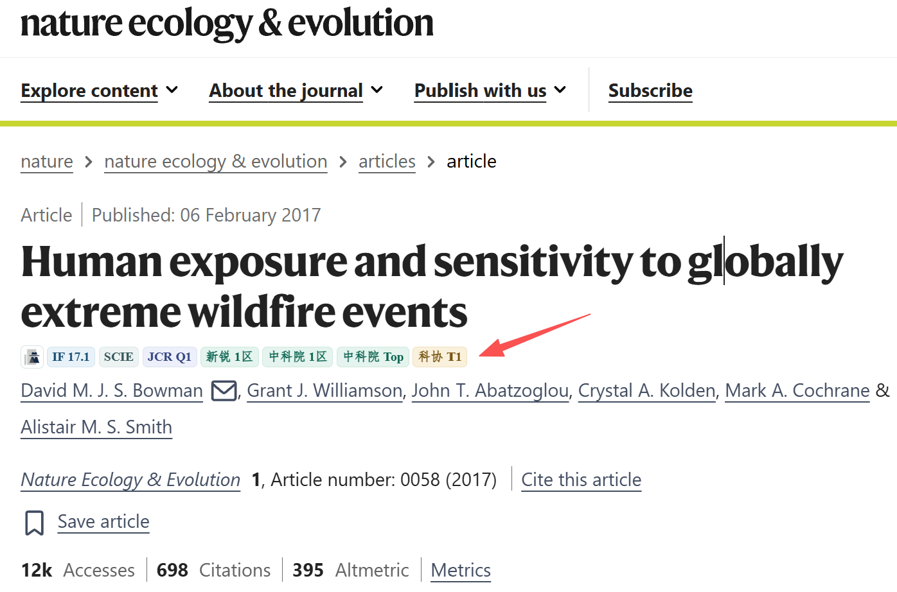
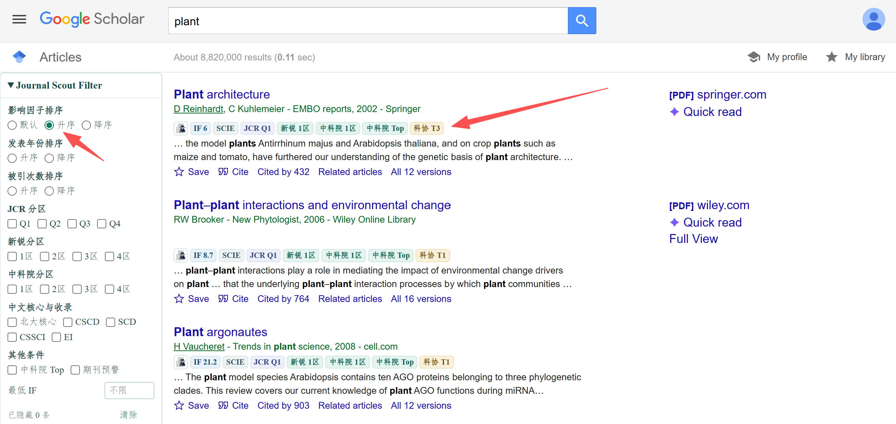
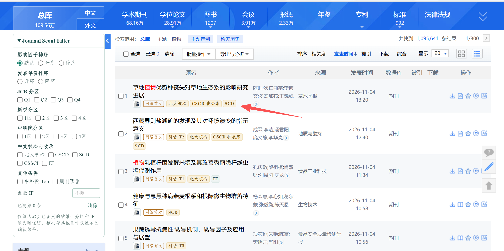
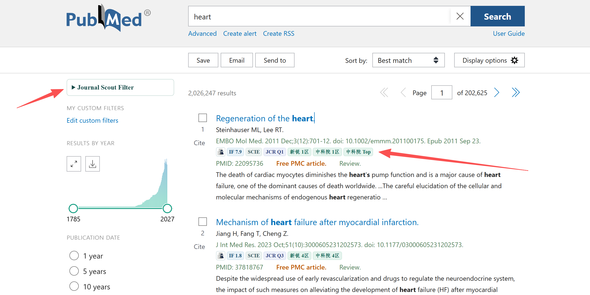
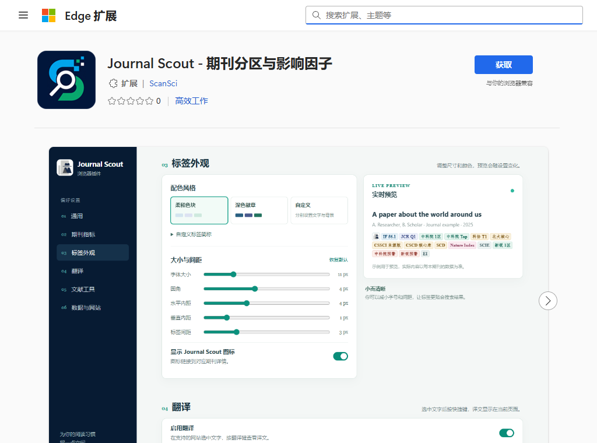
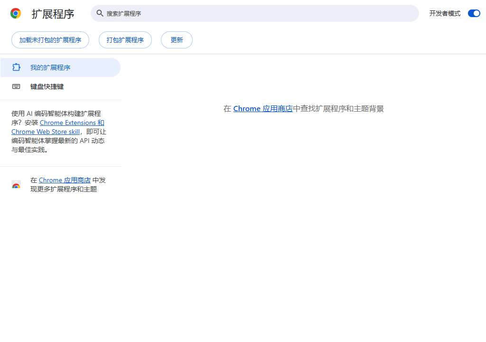

效果展示
点击图片查看原图。



选择你的浏览器
商店版自动更新；离线版需要手动更新。
请选择一种方式，避免重复安装。
安装步骤
- 点击「获取」确认发布者是 ScanSci，点击「获取」并添加。
- 固定图标在工具栏的扩展菜单中固定 Journal Scout。
- 刷新论文页面刷新支持的学术页面；点击插件图标可调整设置。

安装步骤
- 下载并解压下载上方 ZIP，解压后保留文件夹。
- 打开 Edge 扩展页在地址栏输入
edge://extensions，打开右上角的「开发人员模式」。 - 加载插件点击「加载解压缩的扩展」，选择解压后的文件夹（里面有
manifest.json）。
手动更新：新版本发布后下载新版 ZIP，解压并覆盖原文件，再到 edge://extensions 点击「重新加载」。
请选择一种方式，避免重复安装。
安装步骤
- 添加插件在商店点击「添加至 Chrome」并确认。
- 开始使用在工具栏固定 Journal Scout，再刷新论文页面。
安装步骤
- 下载并解压下载上方 ZIP，解压后保留文件夹。
- 打开 Chrome 扩展页在地址栏输入
chrome://extensions，打开右上角的「开发者模式」。 - 加载插件点击「加载已解压的扩展程序」，选择解压后的文件夹（里面有
manifest.json）。 - 开始使用在工具栏扩展菜单中固定 Journal Scout，再刷新已打开的论文页面。

手动更新：新版本发布后下载新版 ZIP，解压并覆盖原文件，再到 chrome://extensions 点击「重新加载」。
推荐使用官方商店版，避免重复安装。
安装步骤
- 添加插件在 Firefox 扩展商店点击「添加到 Firefox」并确认。
- 开始使用在工具栏固定 Journal Scout，再刷新论文页面。
- 下载测试包下载上面的 XPI 文件，无需解压。
- 打开调试页面在 Firefox 地址栏输入
about:debugging#/runtime/this-firefox并回车。 - 临时载入点击「临时载入附加组件」，选择刚才下载的 XPI 文件，然后刷新论文页面。
Firefox 测试包官网测试包尚未签名，只能临时载入；退出 Firefox 后需要重新载入。
Mac Safari 临时安装
- 开启开发者功能在 Safari「设置 → 高级」中启用网页开发者功能。
- 允许临时扩展在 Safari「设置 → 开发者」中允许未签名扩展。
- 加载测试包选择「添加临时扩展」，打开下载的 ZIP 或解压后的文件夹，再刷新论文页面。
Safari 测试限制该包尚未在 Safari 真机验证，仅供支持临时扩展的 Mac Safari 测试；退出 Safari 或 24 小时后需重新加载。iPhone 和 iPad 不能直接安装此 ZIP。
查看 Apple 的临时扩展说明 ↗
更新与迁移
离线版更新：下载并覆盖原文件，在扩展管理页重新加载。曾使用测试包的用户请重新下载；版本号相同或回退时，旧包可能无法自动提示更新。切换安装方式前请导出收藏并停用旧版；设置不互通。
更新说明
以下为手动安装包的更新记录；商店版以商店审核版本为准。
- v0.1.112026.11.12
扩展期刊标签的网站覆盖，支持更多中文平台、出版社搜索结果和选刊工具；优化 ResearchGate、设置页面和插件面板。部分页面仍待进一步实测。
网站覆盖
查看插件已适配的网站与页面。
清单依据现有手动安装包整理；部分网站按论文元数据尝试识别。具体效果取决于页面结构和期刊数据，商店版以实际安装版本为准。
| 网站 | 适配页面 | 说明 |
|---|---|---|
滚动至此时加载网站目录。
表格可上下及左右滚动